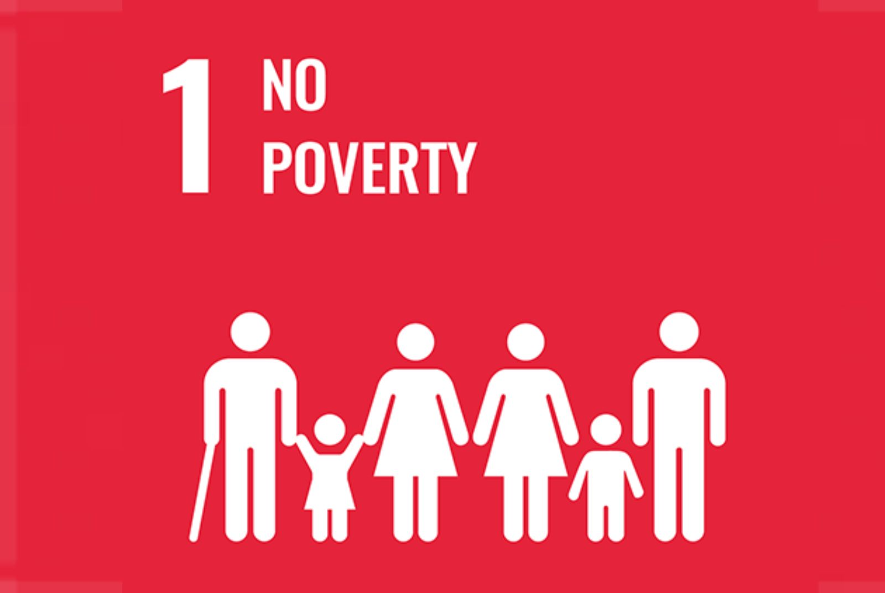

王永慈：消除貧窮是基本生活安全議題，與人類生存有最直接的關係！
 人為什麼會貧窮？
2019年中研院社會變遷調查第七期五次調查結果顯示，認為不願工作而導致貧窮的有82.3％，認為隨意用錢的則有78％，其他認為是社會不公、運氣不好的也有但比例比較低。但根據我們在實務現場，實際接觸到的經濟弱勢族群，卻和這個貧窮歸因的研究呈現十分諷刺的差異。
我們對於貧窮的認知，其實很容易受到每個人的生活經歷不同而有所不同。王永慈老師告訴我們，實際上，造成貧窮的原因跟探討的面向，非常多且複雜，相較於歐美國家比較多的人投入這個領域，臺灣就還是偏少一些。以歐盟來說，關於貧窮主要會關注在這三個面向，包含：所得貧窮(所得低於一定水準以下)、物質剝奪(像是飲食、物質、欠債等都屬於此類)、社會排除(因為經濟匱乏而導致跟社會的連結不佳)這三個面向。
教育對消除貧窮的重要性
回到臺灣正規教育脈絡，可從弱勢族群議題著手，如家庭情形(結構)、社區內部之經濟、 社會文化或學習弱勢、資源弱勢等與此目標進行連結。若發現學生需要協助，目前也有相關政策與資源投注關懷弱勢學生，若進到中小學教育， 透過十二年國民基本教育的品德教育提及，乃指培育學生具備品德核心價值與道德發展的知能，以期養成知善、樂善與行善兼具的品德素養，使個人與社群都能擁有幸福、關懷與公平正義的生活。品德教育在當前面臨嚴峻挑戰與多元價值之 際，期以自由、民主、專業與創新原則，得以選擇、批判、轉化與重建當代品德教育，並以新思維與新行動，共同推動公民資質